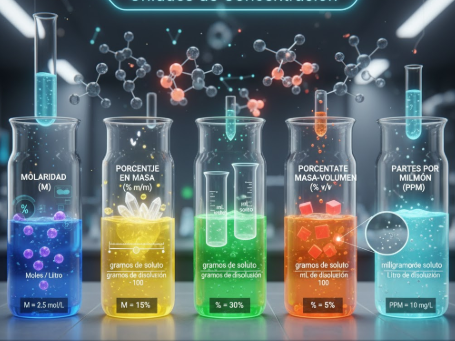

🔎 El Arte de la Proporción
En fisicoquímica, las unidades de concentración permiten expresar la cantidad de soluto presente en una disolución. Este concepto es esencial para comprender fenómenos como la solubilidad, la preparación de soluciones y la dosificación en procesos químicos y médicos. En el grado noveno, se introduce este tema para fortalecer el pensamiento lógico, la interpretación de proporciones y el análisis experimental.
Una disolución está compuesta por un soluto (sustancia que se disuelve) y un solvente (sustancia que disuelve). Las unidades de concentración indican cuánto soluto hay en una cantidad determinada de disolución o solvente.